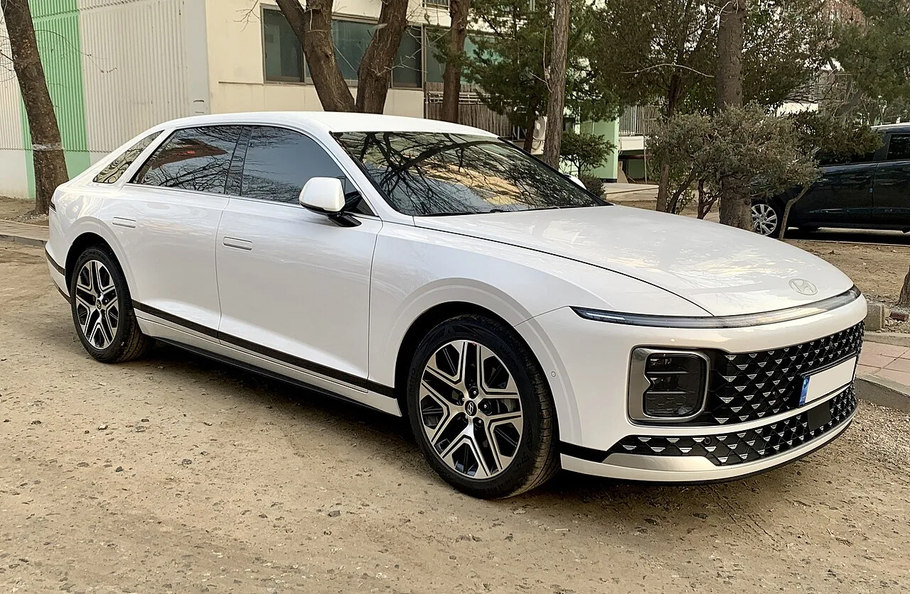
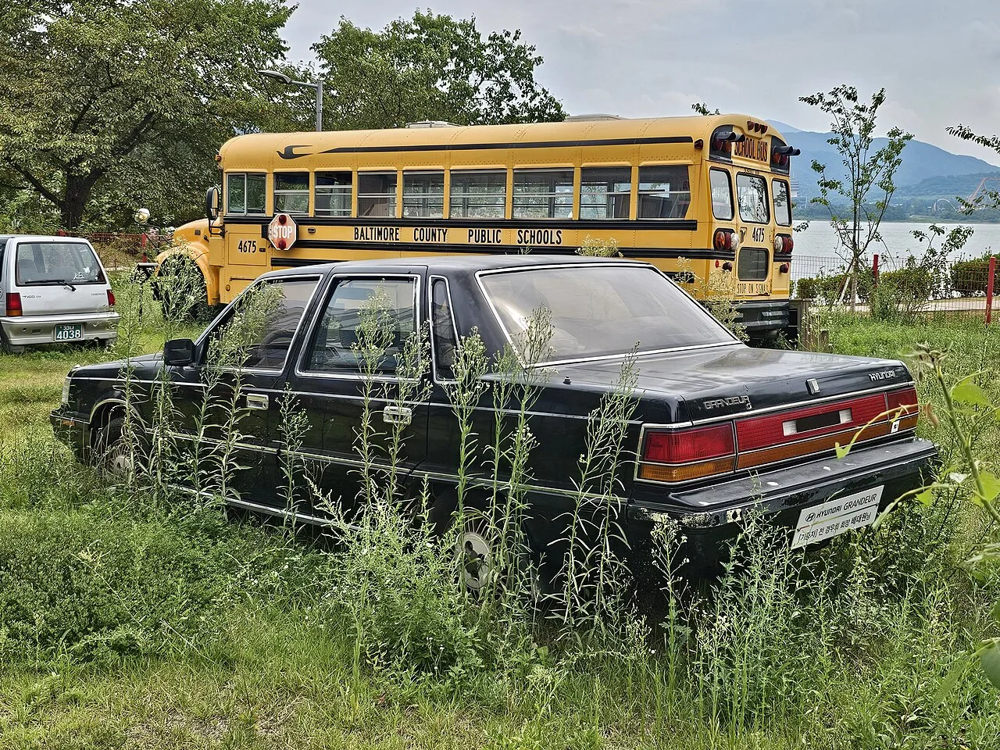
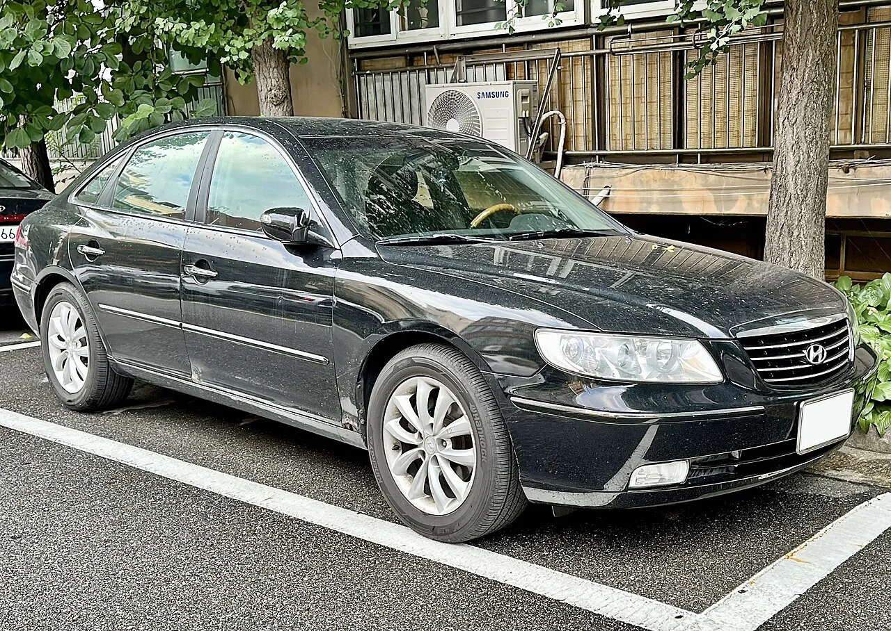
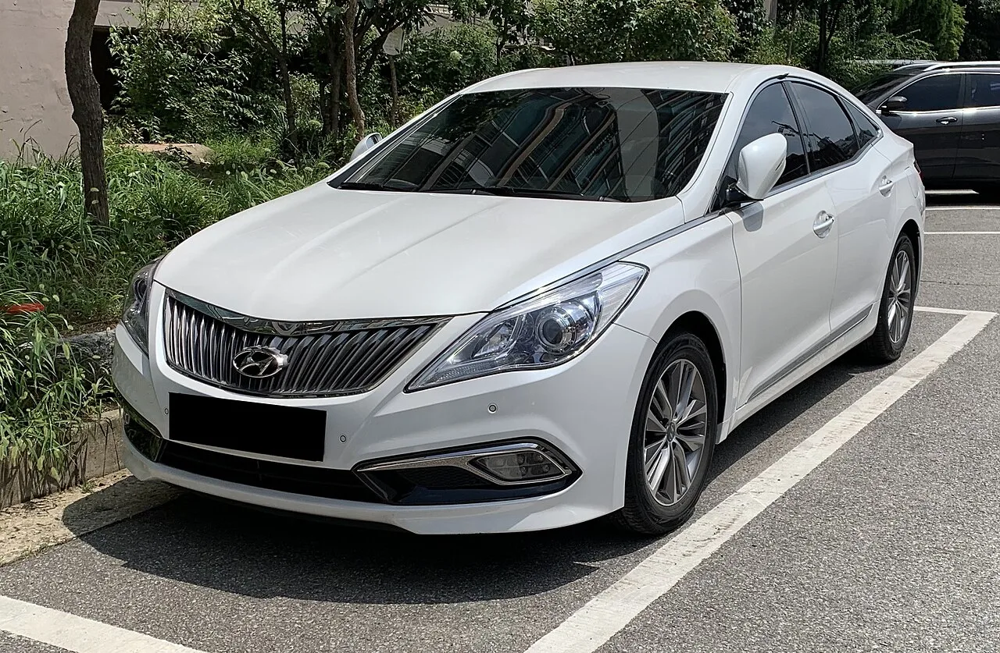
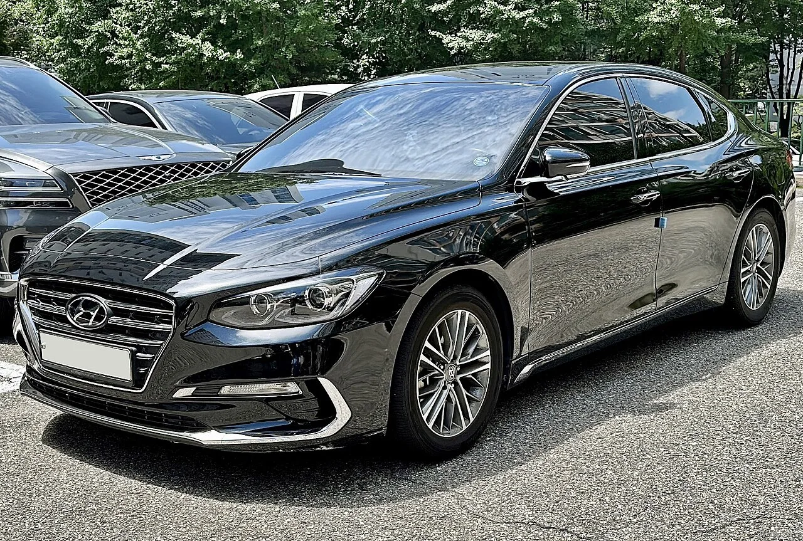
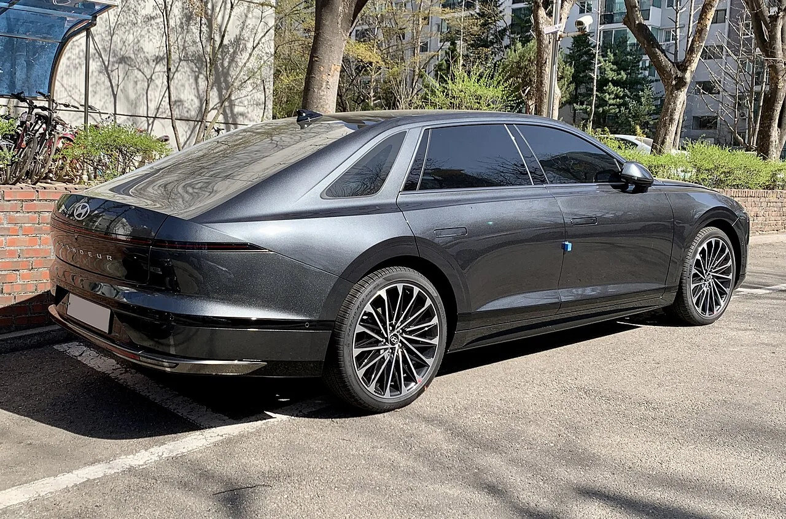

▲ 현대 그랜저 7세대(GN7). 드라마 속 김낙수 부장이 타는 차는 그랜저로 보도됐지만, 정확한 세대는 보도마다 확인되지 않는다 ⓒ Benespit, CC BY-SA 4.0, Wikimedia Commons
2025년 10월 25일부터 11월 30일까지 JTBC 토일드라마로 방영되고 넷플릭스로 함께 공개된 '서울 자가에 대기업 다니는 김 부장 이야기'가 방영 10개월 만인 2026년 9월 다시 이름을 올렸습니다. 서울드라마어워즈 2026 수상작 발표에서 국제경쟁 미니시리즈 작품상, K-드라마 작품상, 국제경쟁 남자연기자상(류승룡) 3개 부문을 가져간 것입니다. 시상식은 10월 8일 서울 여의도 KBS홀에서 열립니다. 이 드라마를 자동차 관점에서 다시 볼 이유가 하나 있습니다. 25년 차 대기업 영업팀장 김낙수 부장(류승룡)이 타는 차가 현대차 그랜저였고, 방영 당시 경제지들이 이 설정을 두고 '성공하면 타는 차'라는 그랜저의 오래된 공식을 다시 꺼내 들었기 때문입니다.
1. 서울 자가, 대기업 부장, 그리고 그랜저
드라마 제목은 그 자체로 한 사람의 성공 조건을 나열합니다. 서울에 집이 있고, 대기업에 다니고, 직급은 부장입니다. 매일경제는 2026년 1월 연재 '세상만車'에서 이 점을 짚었습니다. 드라마 내용과 상관없이 제목만 놓고 보면 김 부장의 삶은 "성공 그 자체"이고, "김 부장이 타고 다니는 그랜저도 그의 성공을 알려준다"는 것입니다.
한국경제도 방영 초반인 2025년 11월 5일 '모빌리티톡'에서 같은 대목에 주목했습니다. 드라마 주인공이 타는 그랜저를 두고 여전히 "성공하면 타는 차"라는 제목을 달았습니다. 자동차 콘텐츠 채널 유카포스트는 좀 더 구체적으로, 극 중 김 부장이 그랜저를 타고 회사 정문을 통과하는 장면을 "수많은 직장인들이 상상하는 가장 현실적인 성공의 그림"이라고 표현했습니다.
여기서 중요한 단어는 '현실적'입니다. 김 부장은 임원이 아닙니다. 임원 승진을 바라보지만 결국 닿지 못하는 인물입니다. 그런 인물에게 수입 대형 세단이나 제네시스 플래그십을 붙였다면 설정은 과장됐을 것이고, 중형 세단을 붙였다면 제목이 말하는 '대기업 부장'의 무게가 덜 전달됐을 것입니다. 그랜저는 그 중간, 노력하면 닿을 수 있는 성공의 자리에 놓인 차입니다.
| 항목 | 내용 | 근거 |
|---|---|---|
| 김낙수 부장의 차 | 현대차 그랜저 | 한국경제(2025.11.5), 매일경제(2026.1.18) |
| 극 중 의미 | 대기업 부장의 '성공'을 보여주는 차 | 한국경제, 매일경제, 유카포스트 |
| 차를 파는 장면 | 11회, 형의 카센터를 통해 매각 | 비즈엔터, TV리포트 |
| 그랜저 세대 | 보도로 확인되지 않음 | — |
| 그랜저 협찬 여부 | 보도로 확인되지 않음 | — |
| 제작지원 자동차 브랜드 | SK스피드메이트(정비소 매장·로고) | 더모빌리언스(2025.12.6) |

▲ 1세대 그랜저(경주 세계자동차박물관). 1986년 첫 출시 당시 '사장차'로 인지도를 쌓았다 ⓒ Damian B Oh, CC BY-SA 4.0, Wikimedia Commons
2. 왜 하필 그랜저인가 — 40년 쌓인 '성공의 공식'
그랜저가 이 역할을 맡을 수 있었던 것은 40년 가까이 쌓인 이미지 덕분입니다. 매일경제에 따르면 1986년 등장한 그랜저는 처음에는 '사장차'로 인지도를 높였고, 그 자리를 에쿠스와 제네시스 G90에 넘겨준 뒤에도 임원차로 인기를 이어갔습니다. 같은 기사는 벤츠 E클래스와 BMW 5시리즈가 '경제적으로 성공하면 타는 차'였다면, 그랜저와 제네시스 G80은 '사회적으로 성공하면 타는 차'로 여겨졌다고 구분합니다. 회사 안에서의 직급과 사회적 인정을 인생의 성적표로 삼아온 김 부장에게 어울리는 쪽은 분명 후자입니다.
세대론도 겹칩니다. 매일경제는 그랜저가 X세대(1970~1980년대생) 김 부장에게 잘 어울리는 차종이라고 봤습니다. X세대가 자동차에 관심을 갖던 10대 시절 그랜저가 처음 등장했고, 고급 차종으로서 이들에게 '성공의 아이콘'이 됐다는 설명입니다. 같은 기사는 그랜저의 타깃이 1~3세대 '사장차', 4·5세대 '아빠차'를 거쳐 6세대 이후 '엄마차·오빠차'로 넓어졌다고 정리했습니다.
광고가 이 이미지를 굳혔습니다. 한국경제는 2009년 그랜저 광고의 카피 "어떻게 지내냐는 친구의 질문에 그랜저로 답했습니다"가 지금도 회자된다고 전했습니다. 차가 곧 근황이고, 근황이 곧 성취라는 공식입니다. 드라마가 김 부장에게 그랜저를 쥐여준 순간, 시청자는 따로 설명을 듣지 않아도 이 공식을 떠올리게 됩니다.

▲ 4세대 그랜저(TG). 매일경제는 4·5세대 그랜저가 '아빠차'로 자리를 넓혔다고 정리했다 ⓒ Benespit, CC BY-SA 4.0, Wikimedia Commons
3. 숫자로 본 '국민 준대형'의 현재
드라마 속 설정이 설득력을 갖는 또 다른 이유는 그랜저가 실제로 도로에서 가장 흔한 차라는 점입니다. 한국경제에 따르면 그랜저는 지난해(2024년) 기준 운행 중인 국산차 가운데 157만3377대로 1위를 기록했습니다. 2023년에는 11만3047대가 팔려 판매 1위를 되찾았고, 2025년 1~10월 판매는 5만3678대였습니다. 매일경제는 그랜저가 2017년부터 2021년까지 5년 연속 국내 판매 1위였다고 전했습니다.
다만 위상은 예전 같지 않습니다. 같은 매일경제 기사는 SUV가 대세가 되면서 그랜저가 기아 쏘렌토에 '국민차' 자리를 넘겼고, 판매가 줄면서 '국민세단' 자리마저 위태롭다고 진단했습니다. 제네시스 G80·G90과 비교하면 성공 이미지도 약해졌다는 평가입니다. 흥미로운 것은 이 흐름이 드라마 속 김 부장의 처지와 겹친다는 점입니다. 한때 확실한 성공의 기준이었지만, 세대교체 앞에서 흔들리는 존재라는 점에서 그렇습니다.
| 항목 | 수치 | 출처 |
|---|---|---|
| 첫 출시 | 1986년 | 한국경제·매일경제 |
| 운행 대수(2024년 기준) | 157만3377대, 국산차 1위 | 한국경제 |
| 2023년 판매 | 11만3047대(판매 1위) | 한국경제 |
| 2025년 1~10월 판매 | 5만3678대 | 한국경제 |
| 연속 판매 1위 | 2017~2021년 5년 연속 | 매일경제 |

▲ 5세대 그랜저(HG). 세대를 거듭하며 그랜저는 사장차에서 임원차, 아빠차로 타깃을 넓혔다 ⓒ Benespit, CC BY-SA 4.0, Wikimedia Commons
4. 차를 파는 장면 — 성공의 상징을 가장 먼저 내려놓다
이 드라마에서 차가 단순한 배경 소품에 그치지 않는 이유는 11회에 있습니다. 2025년 11월 29일 방송된 11회에서 김낙수는 분양 사기로 입은 손실을 메우려고 자기 차를 팔기로 하고, 카센터를 운영하는 형 김창수(고창석)를 찾아갑니다. 비즈엔터 보도에 따르면 형은 "연식도 있고 특히 엔진 보증기간이 다 돼서" 2천만원 정도밖에 못 받는다고 말하고, 김낙수는 "100만원이라도 더 주는 데로" 알아봐 달라고 매달립니다.
그다음 장면이 이 에피소드의 핵심입니다. TV리포트에 따르면 김낙수는 팔기 전 차를 정성껏 세차하며, 바닷가 한번 데려가지 못한 차에게 사과하고 "수고했다"고 말합니다. 대기업 부장의 성공을 증명하던 차에게 건네는 작별 인사입니다. 형의 제안으로 김낙수는 그 카센터에서 세차 일을 시작하고, 마지막회에서는 집을 팔고 백정태(유승목)의 제안도 거절한 채 세차장으로 출근합니다.
서울 자가, 대기업 부장, 그랜저. 제목과 설정이 쌓아 올린 성공의 조건 가운데 김 부장이 가장 먼저 손에서 놓는 것이 차라는 점은 의미심장합니다. 차는 셋 중 가장 쉽게 사고팔 수 있는 물건이면서, 동시에 남에게 가장 잘 보이는 물건이기 때문입니다. 11회는 전국 5.6%, 수도권 6%로 당시 자체 최고 시청률을 기록했습니다.

▲ 6세대 그랜저(IG). 매일경제는 6세대 이후 그랜저가 엄마차·오빠차로도 선호되며 국민차 자리에 올랐다고 봤다 ⓒ Benespit, CC BY-SA 4.0, Wikimedia Commons
5. 협찬은? — 그랜저가 아니라 정비소였다
이 시리즈에서 다뤄온 볼보·제네시스 사례와 달리, '김 부장 이야기'의 그랜저는 협찬 여부가 보도로 확인되지 않습니다. 현대차가 차량 지원을 알린 보도자료도, 그랜저 협찬을 다룬 기사도 이번 취재에서 찾을 수 없었습니다. 그랜저의 세대도 마찬가지입니다. 형이 "연식도 있다"고 말하는 차라는 점만 드러날 뿐, 보도 가운데 세대를 특정한 곳은 없었습니다.
확인된 자동차 관련 제작지원사는 따로 있습니다. 더모빌리언스에 따르면 SK스피드메이트는 매장 촬영 제공과 로고 노출로 드라마 제작지원에 참여했습니다. 극 중 김 부장의 형이 운영하는 정비소로 등장해, 김 부장이 차를 팔고 세차 일을 시작하는 극 후반의 주요 배경이 됐습니다. 방영 이후 스피드메이트에 대한 관심이 늘었다는 보도도 이어졌습니다.
결과적으로 이 드라마에서 자동차 브랜드가 얻은 노출은 두 갈래였습니다. 그랜저는 협찬과 무관하게 '부장님 차'라는 수십 년 된 이미지 덕분에 경제지 칼럼의 소재가 됐고, 스피드메이트는 제작지원을 통해 주인공의 재출발이 이뤄지는 공간으로 이야기 안에 들어갔습니다. 앞의 것은 설정이 브랜드를 빌려 쓴 경우이고, 뒤의 것은 브랜드가 이야기의 무대를 산 경우입니다.

▲ 현행 7세대 그랜저(GN7). SUV 대세 속에서도 그랜저는 운행 대수 기준 국산차 1위를 지키고 있다 ⓒ Benespit, CC BY-SA 4.0, Wikimedia Commons
정리하면, '김 부장 이야기' 속 그랜저는 협찬 모델이라기보다 한국 직장인이 공유하는 성공의 기호로 쓰였습니다. 서울 자가와 대기업 부장이라는 조건 옆에 그랜저를 두는 것만으로 시청자는 김 부장이 어떤 삶을 살아왔는지 알아챘고, 그 차를 세차하며 "수고했다"고 말하는 장면에서 그 삶이 끝났음을 받아들였습니다. 2026년 9월 서울드라마어워즈 3관왕 소식으로 이 드라마가 다시 불려 나온 지금, '부장님 차'라는 말이 여전히 설명 없이 통한다는 사실 자체가 그랜저가 40년 동안 쌓아온 자산입니다.